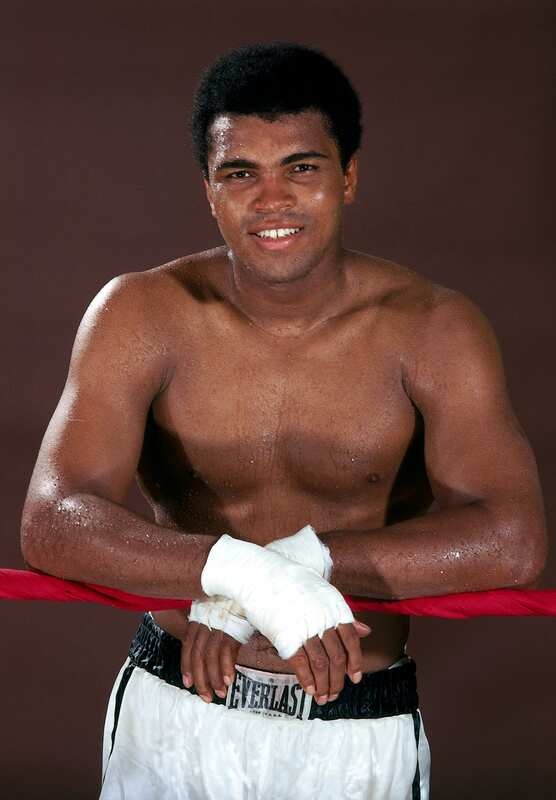
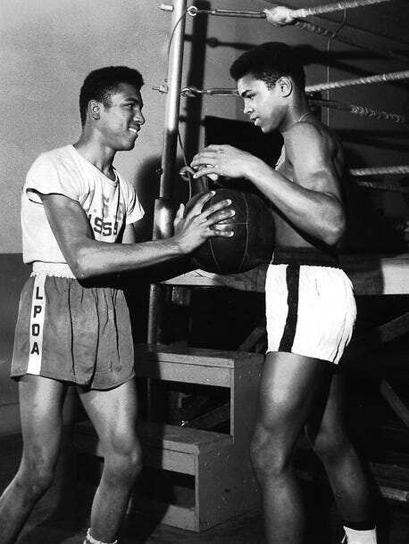
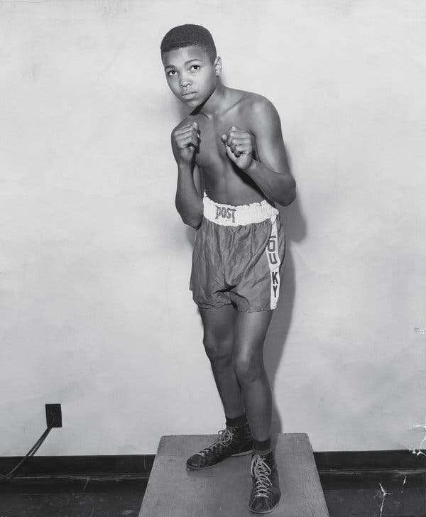
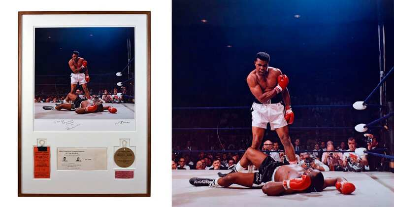
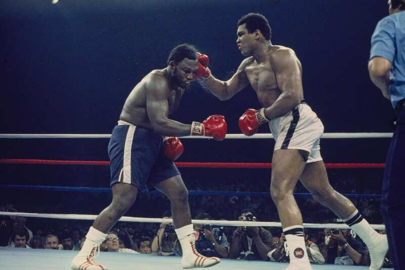
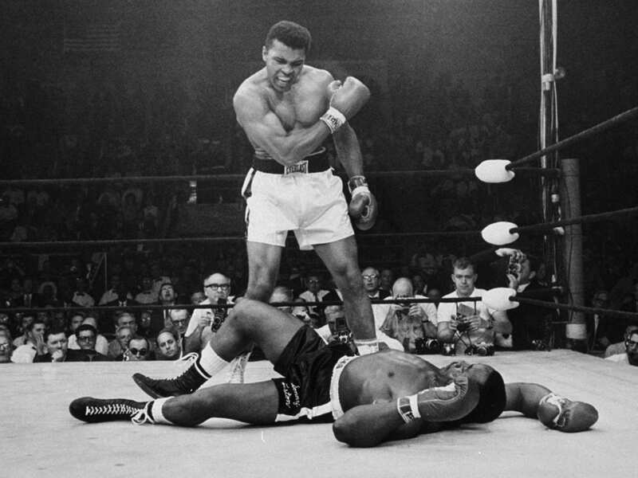
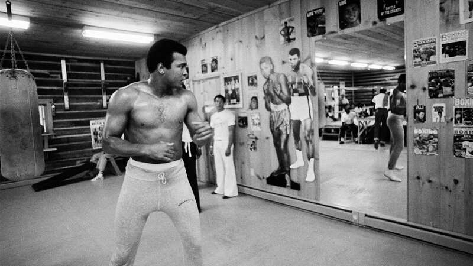

"I am the greatest. I said that even before I knew I was." Born Cassius Clay Jr. on January 17, 1942, in Louisville, Kentucky. He loved boxing, he saw it as an art form and, as one article states, he prided himself on being "more famous than the Pope and the President combined" (SBS News). 56 wins. 37 knockouts. Three-time heavyweight champion.

"I am the greatest, I said that even before I knew I was."— Muhammad Ali
Chapter One
Louisville, Kentucky · 1942–1960
"I hated every minute of training, but I said, 'Don't quit. Suffer now and live the rest of your life as a champion.'" Ali was born January 17, 1942, in Louisville, Kentucky — a deeply segregated city in the Jim Crow South.
Born Cassius Marcellus Clay Jr. at Louisville General Hospital. Grew up at 3302 Grand Avenue. His father painted billboards; his mother was a domestic worker.
At just 12 years old, Cassius had his red Schwinn stolen. He told police officer and boxing trainer Joe Martin he wanted to "whoop" the thief. Martin said: "Well, you better learn how to fight before you start fighting." Within six weeks, fueled by anger and the want for revenge, Cassius won his first bout.
Training daily at the Columbia Gym under Joe Martin and Fred Stoner. Ali's boxing style confounded everyone — hands low, dancing on his toes, leaning away from punches.
Six Kentucky Golden Gloves titles. Two national Golden Gloves. Two AAU titles. Amateur record: 100 wins, 5 losses. A record that had never been seen before.
The basement of the Columbia Auditorium in Louisville. Joe Martin trained young Cassius here. The gym also aired the "Tomorrow's Champions" TV show — Clay's first tv appearance, when he was just 12 years old.
At 18, Clay represented the United States at the 1960 Olympics in Rome. He was so afraid of flying, he ended up buyinga parachute to make sure he would be safe.
Ali won gold with a 5-0 unanimous decision over Zbigniew Pietrzykowski of Poland. He wore the medal everywhere — even sleeping with it on. "He had been inseparable from it" (SBS News).
But according to some people, Clay eventually threw that gold medal into the Ohio River. "He had won it for Louisville and for America, but his own town made him buy hamburgers from a segregated restaurant" (SBS News).


"I hated every minute of training, but I said, 'Don't quit. Suffer now and live the rest of your life as a champion.'" — Muhammad Ali
Chapter Two
61 Fights · 56 Wins · 37 Knockouts
"Float like a butterfly, sting like a bee. His hands can't hit what his eyes can't see." Ali becoming heavyweight champion was described as "the greatest thing to happen to boxing" (SBS News). 61 fights. 56 wins. 37 knockouts. Ali was the first fighter to win the heavyweight title three separate times.
October 29, Louisville. Tunney Hunsaker later said: "He was as fast as lightning." Clay won a unanimous six-round decision.
Liston refused to come out for round 7. "I shook up the world!" Clay shouted. "I am the greatest! I'm the prettiest thing that ever lived!" The next day, he announced his new name: Muhammad Ali.
"I ain't got no quarrel with them Viet Cong." Stripped of his championship. Ali was banned from boxing for over three years.
Ali vs. Frazier. Madison Square Garden. First time two undefeated heavyweights met for the title. Frazier won by unanimous decision after flooring Ali in round 15.
Kinshasa, Zaire. "Is that all you got, George?" Ali whispered while leaning on the ropes. Knocked out Foreman in round 8. Reclaimed the title at age 32.
"It was the closest thing to dying that I know of." Frazier's corner stopped it before round 15. Ali collapsed in exhaustion.
Lost to Leon Spinks in February. Won the rematch in September. First three-time heavyweight champion in history.

7-to-1 underdog. Liston refused to answer the bell for round 7. Clay leapt onto the ropes: "I am the greatest! I shook up the world!" The rematch "lasted less than a round" (SBS News).
60,000 fans. Ali leaned on the ropes absorbing power shots: "Is that all you got, George?" He waited until Foreman was exhausted, then struck with a crazy combination in round 8.

"Frazier was Ali's prime enemy — they met three times and developed a huge respect" (SBS News). 14 rounds in the smoking heat. "It was the closest thing to dying that I know of." — Muhammad Ali

Ali vs. Liston — 1964
Speed bag trainingChapter Three
Courage Beyond the Ring
"I don't have to be what you want me to be. I'm free to be what I want." Ali was "always his own man. Born in the South, he knew racial prejudice" firsthand (SBS News). He defied the U.S. government, changed his name, and refused to go to war.
"Cassius Clay is a slave name. I didn't choose it and I don't want it. I am Muhammad Ali, a free name — it means beloved of God." — Muhammad Ali, the day after defeating Sonny Liston
I ain't got no quarrel with them Viet Cong. No Viet Cong ever called me n----.— Muhammad Ali, 1966
April 28, 1967. Ali refused to step forward for military induction in Houston, Texas. Stripped of his title. Passport confiscated. Banned from boxing. Sentenced to five years in prison. He was 25 years old.
"By March 1967, he had defied the draft board and the US government on Vietnam... his popularity among Americans dropped sharply" (SBS News). The Supreme Court unanimously overturned his conviction in 1971 (Clay v. United States, 403 U.S. 698).
"I don't have to be what you want me to be." — After winning the title
"My conscience won't let me go shoot my brother, or some darker people, or some poor hungry people in the mud for big powerful America."
"I am Muhammad Ali, a free name — it means beloved of God, and I insist people use it when speaking to me."
"I am America. I am the part you won't recognize. But get used to me."
Chapter Four
Everyone's Champion
"Service to others is the rent you pay for your room here on earth." He felt pride on being "more famous than the Pope and the President of the United States combined — and at the height of his career, he probably was" (SBS News).
Ali — battling Parkinson's — lit the Olympic cauldron at the 1996 Atlanta Games. Three billion people watched worldwide.
Awarded by President George W. Bush in 2005. The nation's highest civilian honor. Also received: Otto Hahn Peace Medal, UN Messenger of Peace.
Opened 2005 in Louisville. Dedicated to his six core values: Confidence, Conviction, Dedication, Giving, Respect, and Spirituality.
Subject of the Academy Award-winning documentary When We Were Kings (1996) and Michael Mann's biopic Ali (2001) starring Will Smith (SBS News).
"Ali retired in 1981 after being outpointed by a light-punching Canadian — his second successive defeat, several years too late. His health became a constant worry" (SBS News).
Diagnosed with Parkinson's disease in 1984. Passed away June 3, 2016, in Scottsdale, Arizona, at age 74. Tens of thousands lined the funeral route through Louisville. "If my mind can conceive it, and my heart can believe it — then I can achieve it."
In His Words
The Louisville Lip
Float like a butterfly, sting like a bee. His hands can't hit what his eyes can't see.
— Before the Liston fightI am the greatest, I said that even before I knew I was.
Don't count the days; make the days count.
He who is not courageous enough to take risks will accomplish nothing in life.
Impossible is just a big word thrown around by small men who find it easier to live in the world they've been given than to explore the power they have to change it.
I shook up the world! I'm the prettiest thing that ever lived!
— After defeating Liston, 1964Service to others is the rent you pay for your room here on earth.
The man who has no imagination has no wings.
It's hard to be humble when you're as great as I am.
I hated every minute of training, but I said, 'Don't quit. Suffer now and live the rest of your life as a champion.'
A man who views the world the same at fifty as he did at twenty has wasted thirty years of his life.
If my mind can conceive it, and my heart can believe it — then I can achieve it.
The Numbers
A Career in Numbers
| Date | Opponent | Result | Method | Rd |
|---|---|---|---|---|
| Oct 1960 | Tunney Hunsaker | Win | Decision | 6 |
| Feb 1964 | Sonny Liston | Win | TKO | 7 |
| May 1965 | Sonny Liston II | Win | KO | 1 |
| Nov 1966 | Cleveland Williams | Win | TKO | 3 |
| Mar 1971 | Joe Frazier I | Loss | Decision | 15 |
| Jan 1974 | Joe Frazier II | Win | Decision | 12 |
| Oct 1974 | George Foreman | Win | KO | 8 |
| Oct 1975 | Joe Frazier III | Win | TKO | 14 |
| Feb 1978 | Leon Spinks | Loss | Decision | 15 |
| Sep 1978 | Leon Spinks II | Win | Decision | 15 |
| Oct 1980 | Larry Holmes | Loss | TKO | 10 |
| Dec 1981 | Trevor Berbick | Loss | Decision | 10 |
References
Sources & Attributions
“Muhammad Ali.” Encyclopædia Britannica, 21 Feb. 2026, www.britannica.com/biography/Muhammad-Ali-boxer. Used for biographical facts including birth date, birthplace, conversion to Islam, Vietnam War draft refusal, career timeline, and legacy details.
“Muhammad Ali.” BoxRec, boxrec.com/en/box-pro/180. Used for professional boxing record (61 bouts, 56 wins, 37 KOs, 5 losses), fight results, physical profile, and career dates.
“Boxing Career of Muhammad Ali.” Wikipedia, Wikimedia Foundation, en.wikipedia.org/wiki/Boxing_career_of_Muhammad_Ali. Used for detailed fight descriptions including the Ali–Liston bouts, Ali–Frazier trilogy, Ali–Foreman, rope-a-dope strategy, and three-time championship timeline.
Hauser, Thomas. Muhammad Ali: His Life and Times. Simon & Schuster, 1991. Referenced via PopMatches, 19 Jul. 2016, www.popmatches.com/muhammad-ali-a-tribute-to-the-greatest. Used for biographical context and the characterization of Ali as “a symbol” beyond boxing.
“Ali: A Boxer More Famous Than the Pope.” SBS News, 4 Jun. 2016, www.sbs.com.au/news/article/ali-a-boxer-more-famous-than-the-pope. Used for descriptions of Ali as lifting boxing into “an art form,” being “more famous than the Pope and the President combined,” the gold medal / Ohio River anecdote, “always his own man,” and career toll details.
“Clay v. United States.” Wikipedia, Wikimedia Foundation, en.wikipedia.org/wiki/Clay_v._United_States. Used for the Supreme Court case details: the unanimous 8–0 reversal of Ali’s draft conviction in 1971.
“The Supreme Court Decision That Saved Muhammad Ali’s Boxing Career.” National Constitution Center, 4 Jun. 2016, constitutioncenter.org/blog/alis-supreme-court-decision. Used for details on the 8–0 ruling and conscientious objector status.
“How Muhammad Ali Secured the Release of 15 US Hostages in Iraq.” New York Post, 29 Nov. 2015, nypost.com/2015/11/29/the-tale-of-muhammad-alis-goodwill-trip. Used for the 1990 Iraq hostage negotiation.
“Citations for Recipients of the 2005 Presidential Medal of Freedom.” The White House Archives, 9 Nov. 2005, georgewbush-whitehouse.archives.gov. Used for the Presidential Medal of Freedom awarded by President George W. Bush.
“United States v. Clay: Muhammad Ali’s Fight Against the Vietnam Draft.” Federal Judicial Center, www.fjc.gov. Used for details on draft refusal, title stripping, boxing ban, and prison sentence.
“Muhammad Ali Quotes.” Goodreads, from Thomas Hauser, Muhammad Ali: His Life and Times, 1991, www.goodreads.com/work/quotes/669759. Used for Ali’s famous quotes including “Float like a butterfly, sting like a bee.”
“Me We by Muhammad Ali.” Poem Analysis, 25 Apr. 2022, poemanalysis.com/muhammad-ali/me-we/. Used for the “Me, We” poem delivered at Harvard in 1975.
“The Rumble in the Jungle.” Wikipedia, Wikimedia Foundation, en.wikipedia.org/wiki/The_Rumble_in_the_Jungle. Used for the estimated 1 billion television viewers, Kinshasa location, and rope-a-dope strategy details.
“Muhammad Ali Lights the Olympic Cauldron.” Olympics.com, International Olympic Committee, 20 Jan. 2025, www.olympics.com. Used for the 1996 Atlanta Olympic torch lighting and Parkinson’s diagnosis.
“Muhammad Ali: An Olympic Life.” Muhammad Ali Center, 19 Jul. 2024, alicenter.org/muhammad-ali-an-olympic-life/. Used for the 1960 Olympic gold medal and 1996 torch lighting details.
Leifer, Neil. “Muhammad Ali vs. Sonny Liston.” 25 May 1965. Neil Leifer Photography, neilleifer.com. Photograph of Ali standing over Liston. Used as the home page hero image and career page image.
“Muhammad Ali Olympic Torch.” Getty Images, www.gettyimages.com. Photograph of Ali lighting the Olympic flame at the 1996 Atlanta Games. Used as the Legacy page hero background.
“Muhammad Ali, Sonny Liston and the Greatest Sports Photo Ever.” The New York Times, 25 May 2025, www.nytimes.com. Used for context on the iconic Neil Leifer photograph and attribution.